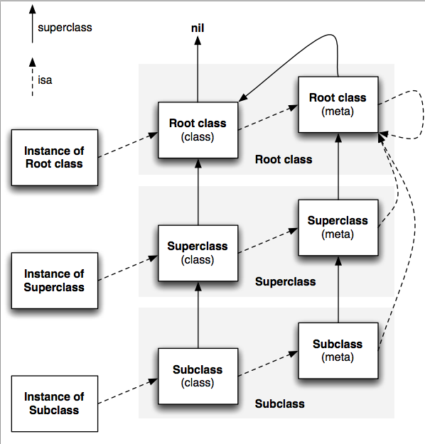

理解 Objective-C Runtime
I’m sorry that I long ago coined the term “objects” for this topic because it gets many people to focus on the lesser idea. The big idea is “messaging” – that is what the kernal[sic] of Smalltalk is all about... The key in making great and growable systems is much more to design how its modules communicate rather than what their internal properties and behaviors should be.
-- by Alan Kay
在C语言调用一个方法其实就是跳到内存中的某一点并开始执行一段代码。没有任何动态的特性，因为这在编译时就决定好了。而在 Objective-C中，[object foo]语句并不会立即执行foo这个方法的代码。它是在运行时给object发送一条叫foo的消息。这个消息，也许会由object来处理，也许会被转发给另一个对象，或者不予理睬假装没收到这个消息。多条不同的消息也可以对应同一个方法实现。这些都是在程序运行的时候决定的。
事实上，在编译时Objective-C函数调用的语法都会被翻译成一个C的函数调用 - objc_msgSend().
比如，编译器会把
[target doMethodWith:var1];
编译成
objc_msgSend(target,@selector(doMethodWith:),var1);
显然，发送消息并不是直接的函数调用，到objc_msgSend里面就是Objective-C Runtime来处理了。
objcobject, objcclass 以及 Ojbc_method
在Objective-C中，本质上，类、对象和方法都是一个C的结构体
比如我们知道id就是指向一个Objective-C的对象的指针，也就是objc_object的实例，其中有一个isa指针，这个isa指向它所属的类。来看看它的定义
typedef struct objc_object {
Class isa;
} *id;
所以当你拿到一个id指针之后，就可以获取这个对象的类，并且可以检测其是否响应一个selector。isa指向的objc_class实例的里面其实保存的就是该对象对应的类的信息。定义如下
typedef struct objc_class *Class;
struct objc_class {
Class isa;
Class super_class;
const char *name;
long instance_size;
struct objc_ivar_list *ivars;
struct objc_method_list **methodLists;
struct objc_cache *cache;
struct objc_protocol_list *protocols;
};
struct objc_method_list {
struct objc_method_list *obsolete;
int method_count;
struct objc_method method_list[1];
};
我们看到这些类的信息包括，继承关系，实现的协议，方法列表，和属性列表，实例大小，ivar的类型和布局等等。其中方法都对应结构体是objc_method，这个结构体其实就是一个key/value对，定义如下
typedef struct objc_selector *SEL;
typedef id (*IMP)(id self,SEL _cmd,...);
struct objc_method {
SEL method_name;
char *method_types;
IMP method_imp;
};
key是所谓的Selector(相当于编译器生成的唯一的标识函数的字符串)；而值就是IMP，一个IMP就是一个函数指针，由编译器生成的，当你发起一个消息之后，最终它会执行的那个代码，就是由这个函数指针指定的。
从这些定义中可以看出， 发送一条消息，也就是objc_msgSend，大概到底做了什么事情。
举objc_msgSend(obj, foo)这个例子来说：
- 首先，通过 obj 的 isa 指针找到它的 class
- 在 class 的 method list 找 foo
- 如果 class 中没到 foo，继续往它的 superclass 中找
- 一旦找到 foo 这个函数，就去执行它的实现IMP
block的设计也类似，它也包含了isa的指针
struct Block_literal_1 {
void *isa; // initialized to &_NSConcreteStackBlock or &_NSConcreteGlobalBlock
...
};
所以block像object一样也是可以响应消息的。
MetaClass
isa指向对象就是该object对应的类。也就是Objective-C的类本身也是一个对象，暂时我们称之为类对象(class object)。 它包含的信息包括，继承关系，实现的协议，方法列表，和属性列表，实例大小，ivar的类型和布局等等。当你进行类方法(class method)的调用的时候的时候，比方说
[NSObject alloc];
你事实上是把这个消息发给了这个类对象(class object)。
既然class object是一个实例，那么它必然是属于某一个类，这个类被称作metaclass。一个metaclass就是class object的描述，就像一个class是它的object的描述一样。
值得一提的是，metaclass的方法列表就是我们称之为class methods的东西：class本身应该响应的那些selectors。当你发送一个消息给class，也就是metaclass的实例的时候，objc_msgSend()会查找metaclass的方法列表（包括它的父类），来决定是否可以响应。一个class method记录在metaclass里，就像instance method记录在class中。
metaclass也是一个实例，也有父类，也有isa和super_class。最终的源头是一个特殊的root class。不过metaclass的isa指针其实是无关紧要的，因为现实中，没有人会给metaclass object发送消息的。
相对更重要的是metaclass的继承关系，metaclass有着和class一样的平行的继承关系。所以class methods也就相应的有了继承关系。
此外，由于root metaclass的父类是root class，所以每一个class object可以响应root class的instance methods
最后任何一个class object都是root class（或者它的子类的）实例
下面这张图能很好的总结上面的结论，始终要记住的是，当一个message发送给一个object的时候，这个object首先根据isa指针来寻找是否可以响应，然后在根据super_class指针在继承链中寻找

为啥我们要继承 Apple Classes
初学Cocoa开发的时候，多数教程都要我们继承一个类比方NSObject，然后我们就开始Coding了。比方说：
MyObject *object = [[MyObject alloc] init];
这个语句用来初始化一个实例，类似于 C++ 的 new 关键字。这个语句首先会执行MyObject这个类的+alloc方法，所以继承 Apple 的类我们不仅是获得了很多很好用的属性，而且也继承了这种内存分配的方法。
什么是Class Cache(objc_cache *cache)
每次发送一个消息的时候，都要去查找方法列表的实现有个问题，效率低。比如一个class往往只有20%的函数会被经常调用，可能占总调用次数的80%。每个消息都需要遍历一次objc_method_list并不合理。如果把经常被调用的函数缓存下来，那可以大大提高函数查询的效率。这也就是objc_class中另一个重要成员objc_cache做的事情 - 再找到foo之后，把foo的method_name作为key，method_imp作为value给存起来。当再次收到foo消息的时候，可以直接在cache里找到，避免去遍历objc_method_list.
说回 objc_msgSend 这个方法
[self printMessageWithString:@"Hello World!"];
会被编译器翻译成
objc_msgSend(self,@selector(printMessageWithString:),@"Hello World!");
objc_msgSend执行的步骤大致是这样：
- 检测这个selector是不是要忽略的。比如Mac OS X开发，有了垃圾回收就不理会retain,release这些消息了
- 检测这个target是不是
nil。ObjC的特性是允许对一个nil对象执行任何一个方法不会Crash，因为会被忽略掉 - 如果上面两个都过了，那就开始查找这个类的IMP，先从cache里面找，找得到的话，就跳到对应的函数去执行
- 如果cache找不到就到成员方法列表里去找，还找不到，就到父类里去找
- 最后还找不到的话，就要进行消息转发逻辑
消息转发机制
在上面的例子中，如果@selector(printMessageWithString:)最终没有找到，通常情况下，程序会在运行时挂掉并抛出unrecognized selector sent to …的异常。但在异常抛出前，Objective-C的运行时会给你三次拯救程序的机会：
- Method resolution
- Fast forwarding
- Normal forwarding
Method Resolution
在找不到消息对应的函数后，首先，Objective-C运行时会调用+resolveInstanceMethod: 或者+resolveClassMethod:，让你有机会提供一个函数实现。如果你添加了函数并返回YES，那运行时系统就会重新启动一次消息发送的过程。以foo为例，你可以这么实现
void fooMethod(id obj, SEL _cmd)
{
NSLog(@"Doing foo");
}
+ (BOOL)resolveInstanceMethod:(SEL)aSEL
{
if(aSEL == @selector(foo:)){
class_addMethod([self class], aSEL, (IMP)fooMethod, "v@:");
return YES;
}
return [super resolveInstanceMethod];
}
Core Data有用到这个方法。NSManagedObjects中properties的getter和setter就是在运行时动态添加的
如果resolve方法返回NO，运行时就会移到下一步：消息转发（Message Forwarding）
PS：iOS 4.3 加入很多新的 runtime 方法，主要都是以 imp 为前缀的方法，比如 imp_implementationWithBlock() 用 block 快速创建一个 imp 。
上面的例子可以重写成：
IMP fooIMP = imp_implementationWithBlock(^(id _self) {
NSLog(@"Doing foo");
});
class_addMethod([self class], aSEL, fooIMP, "v@:");
Fast forwarding
消息转发（Message Forwarding）首先会执行Fast forwarding，也就是如果目标对象实现了-forwardingTargetForSelector:，Runtime这时就会调用这个方法，给你把这个消息转发给其他对象的机会
- (id)forwardingTargetForSelector:(SEL)aSelector
{
if(aSelector == @selector(foo:)){
return alternateObject;
}
return [super forwardingTargetForSelector:aSelector];
}
只要这个方法返回的不是nil和self，整个消息发送的过程就会被重启，当然发送的对象会变成你返回的那个对象。否则，就会继续Normal Fowarding。
这里叫Fast，只是为了区别下一步的转发机制。因为这一步不会创建任何新的对象，但下一步转发会创建一个 NSInvocation 对象，所以相对更快点。
Normal forwarding
这一步是Runtime最后一次给你挽救的机会。首先它会发送-methodSignatureForSelector:消息获得函数的参数和返回值类型。如果-methodSignatureForSelector:返回nil，Runtime则会发出-doesNotRecognizeSelector:消息，程序这时也就挂掉了。如果返回了一个函数签名，Runtime就会创建一个NSInvocation对象并发送-forwardInvocation:消息给目标对象。
NSInvocation 实际上就是对一个消息的描述，包括selector 以及参数等信息。所以你可以在-forwardInvocation:里修改传进来的NSInvocation对象，然后发送-invokeWithTarget:消息给它，传进去一个新的目标：
- (void)forwardInvocation:(NSInvocation *)invocation
{
SEL sel = invocation.selector;
if([alternateObject respondsToSelector:sel]) {
[invocation invokeWithTarget:alternateObject];
}
else {
[self doesNotRecognizeSelector:sel];
}
}
Cocoa 里很多地方都利用到了消息传递机制来对语言进行扩展，如 Proxies、NSUndoManager 跟 Responder Chain。NSProxy 就是专门用来作为代理转发消息的；NSUndoManager 截取一个消息之后再发送；而 Responder Chain 保证一个消息转发给合适的响应者。
Apple 设计这种机制的原因之一就是——用来模拟多重继承（ObjC 原生是不支持多重继承的）。或者把复杂设计隐藏起来。